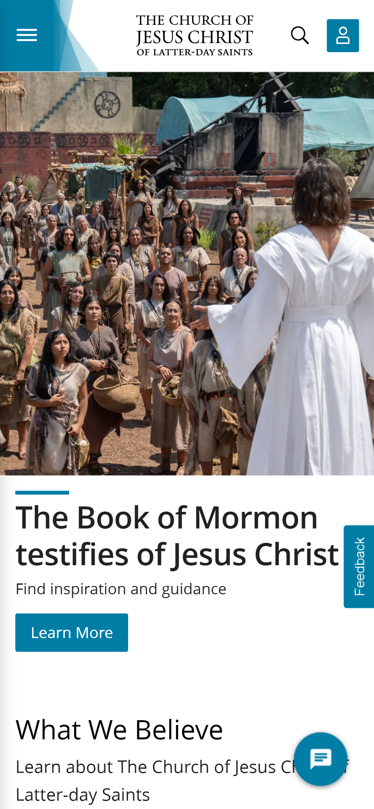

Hick's Law
Hick's law is a desigin principle that talks about how a person will take longer to make a descion when prestented with more options. in simple terms if a person has more options there decsion time will be longer. The google website shows a perfect example of this because when a person goes to this site, they are given a single option which would decrease there decsion makeing time.
PARC: Proximity
lds.org
The PARC: proximity principle states that related aspects of the design should be close together to tell a single story. In the lds website they use proximty by using a large image at the first then haveing a what we belive clost by. with proximity in there desigin users would be pointed that the belifs would be what is found in the image.
PARC: Repetition
Amazon
Amazon's website is a great example of the PARC: Repetition principle. the reason why is there use of the same topography through out the page. They also use the same white background in all of there sections and black color for there text. There is also repetition how they have individuial cards for each different product.